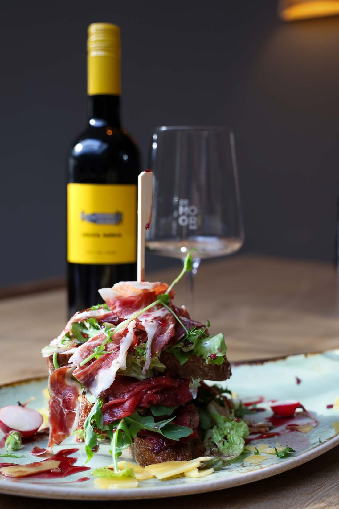
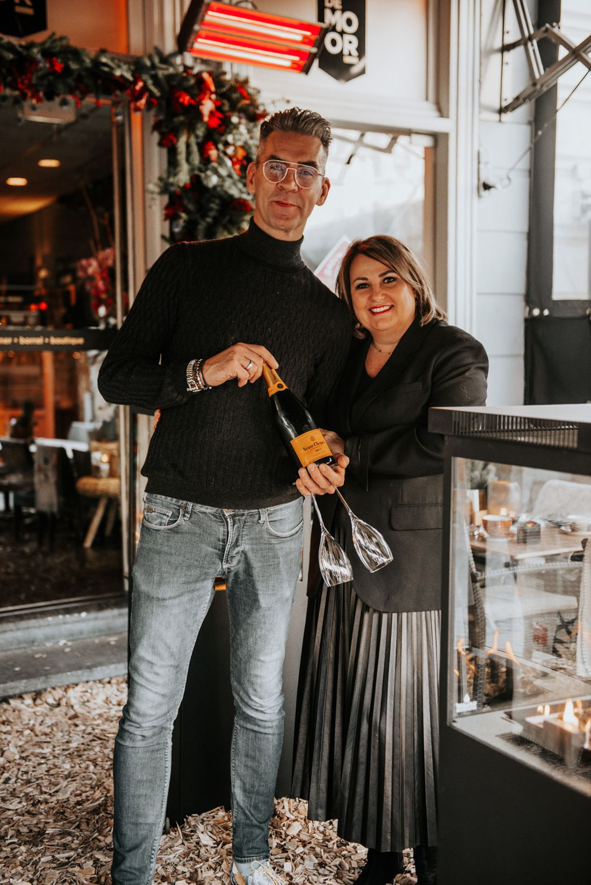
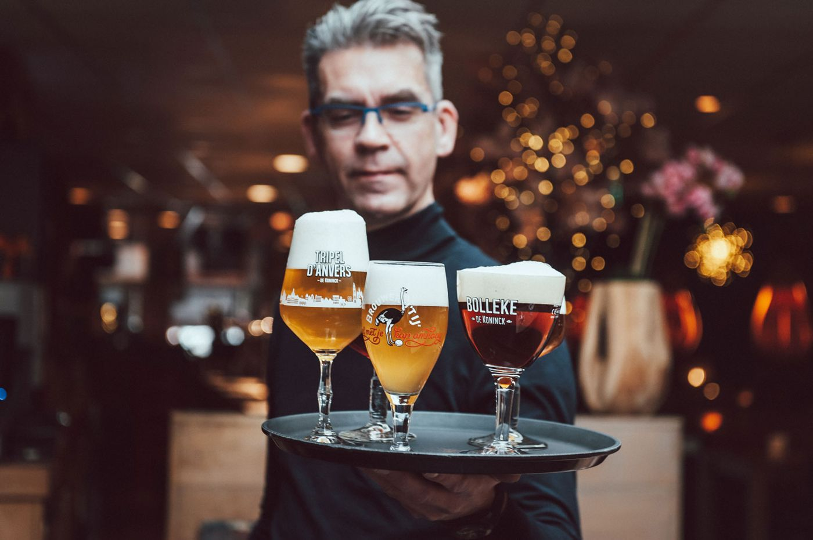
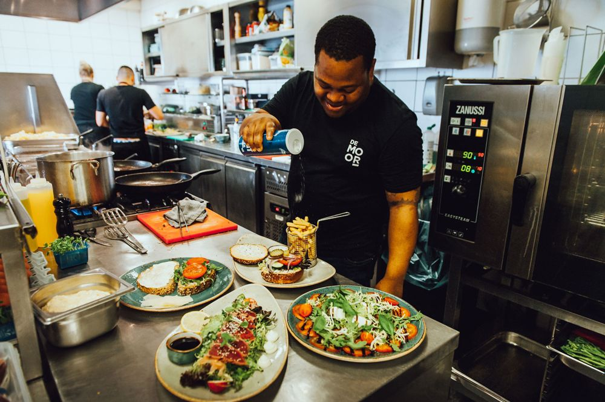
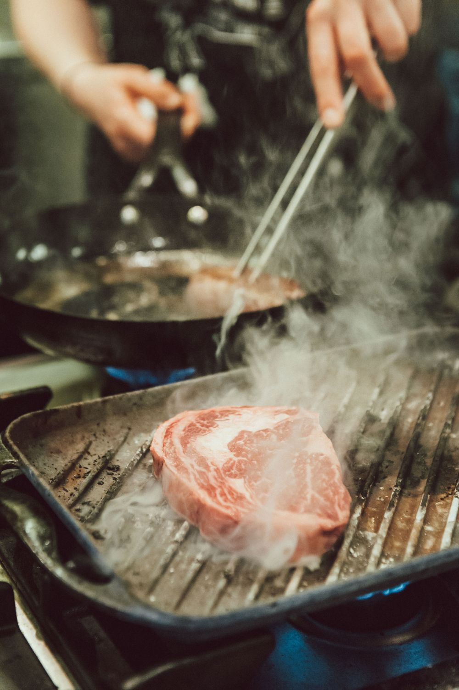

Lunchen, borrelen en dineren in het hart van Bergen op Zoom. Met een lokale twist, veel wijnen per glas en een terras midden op de markt.

Zin in een avond lang genieten met de hele tafel, of een middag bijpraten met een groep?
Een amuse en vier gangen met bijpassende wijnen, inclusief brood en tafelwater. Vanaf vier personen, voor de hele tafel. Liever bier? Dan wordt het Beer & Dine.
Voor groepen vanaf 8 personen: koude, warme en zoete lekkernijen in drie gangen, met onbeperkt thee en tafelwater.

Wie de Grote Markt op loopt en naar de westkant kijkt, ziet een pand waar het bruist, glazen klinken en mensen genieten van lekker eten. Dat is De Moor van Ellen en Sven.
In de keuken koken we Frans-Japans met een lokale twist en een vleugje luxe, met verse producten en partners als het Kaasatelier en G&B vis- en vleeshandel. Bij elk hoofdgerecht geven we een wijn- én biertip.
“De plek waar je begint met een kopje koffie en voor je het weet aan het dessert zit, na een diner met vrienden die spontaan zijn aangeschoven.”
Bedenk er zelf een bubbeltje bij en zachte lounge deuntjes op de achtergrond.



Veel gasten komen al jaren bij ons terug.
“We komen hier al jaren, en met goede reden! Vriendelijk personeel, hele mooie kaart met veel afwisseling. Leuke seizoens-speciaalbiertjes op de tap, mooie wijnen op de kaart, en vakkundig personeel die ook snapt wat je eet en wat er bij past. De gerechten zien er ook altijd prachtig uit. Wij zitten hier altijd op ons gemak.”
Sylvia I.“Zoals we altijd gewend zijn bij De Moor, heerlijk gegeten, gerechten met superverse producten. Vriendelijke bediening voor wie geen vraag teveel is. Ze denken altijd mee, ook bij gasten met een glutenintolerantie. Wij zijn heel tevreden gasten.”
Marjilijn N.“Pareltje in het centrum van Bergen op Zoom. Vriendelijk geprijsd, goede bediening en fantastisch eten. Als je niet kunt kiezen uit de vele tentjes in het centrum, ga dan hier eten.”
Tristan“Zoals altijd weer heerlijk geluncht bij De Moor 😊! Met heerlijke Verdejo en de Tonijn Tataki. Fantastisch plekje op de Grote Markt ☀️!”
Barbara W.“Gezellig en heerlijk op terras gezeten in het zonnetje. Het eten was heerlijk, de wijn was super. We komen zeker terug, om te genieten op de markt.”
Aart“Gastrobar de Moor is een gezellige en uitnodigende plek, waar de sfeer warm en ontspannen is, waardoor het een geweldige plek is om te genieten van een maaltijd. Het eten is smaakvol, goed bereid en aantrekkelijk gepresenteerd. Van voor- tot hoofdgerechten, alles voelt doordacht samengesteld. Al met al een prima plek als je op zoek bent naar lekker eten in een gezellige setting.”
Djanmar S.In onze shop-in-restaurant vind je mooie producten voor etentjes, borrels en feestjes. Van glaswerk en servies tot kaarsen, en altijd een raak cadeau. Omdat Ellen gek is op inkopen doen, valt er steeds iets nieuws te ontdekken.
Open van woensdag t/m zondag van 12.00 tot 18.00 uur. Zie je tijdens je lunch of diner iets moois? Dan helpen we je graag.
Neolea · Duro Ceramics · Gresnovo · Costa Nova · House Doctor · Heinen Delfts Blauw · Bordy's · Sjaal met Verhaal · Nosse · Leeff
Geen standaard dozen, maar echte cadeaus met aandacht. Elk pakket stelt Ellen zelf met zorg samen, groot of klein, voor je medewerkers, relaties of iemand die je wilt bedanken.
Bel of mail ons, dan denken we graag met je mee.
Mail onsReserveer online, of bel ons. Op een mooie dag zit je zo op het terras aan de Grote Markt.
| Maandag | Gesloten |
| Dinsdag | Gesloten |
| Woensdag | 12.00 – 23.00 uur |
| Donderdag | 12.00 – 23.00 uur |
| Vrijdag | 12.00 – 23.00 uur |
| Zaterdag | 12.00 – 23.00 uur |
| Zondag | 12.00 – 20.00 uur |
Parkeren: op minder dan 1 minuut lopen liggen de parkeerterreinen Sint Catharinaplein en de Korenmarkt.
Think no moor & join the team. We zoeken een zelfstandig werkend kok, hulp in de bediening en een interieurverzorgster. Stuur je cv naar info@gastrobardemoor.nl of bel en vraag naar Ellen of Sven.